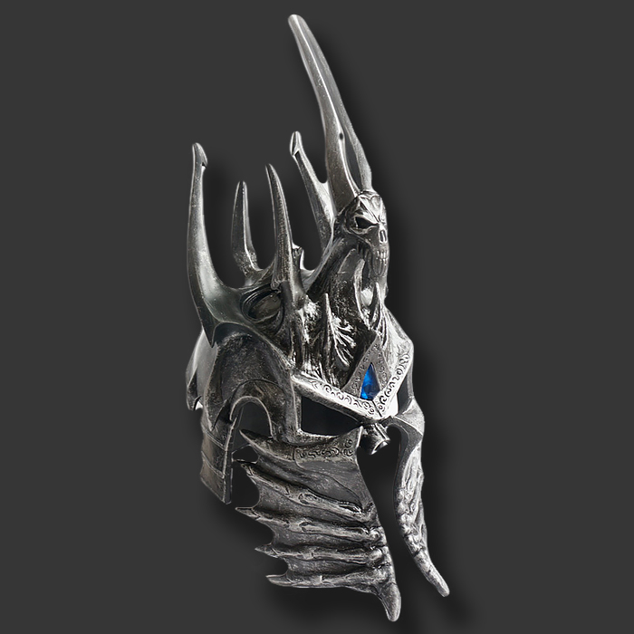

Arthas Menethil is the Crown Prince of Lordaeron and Knight of the Silver Hand, was the heir to King Terenas Menethil II's throne.
Uther the Lightbringer trained him as a paladin and initiated him into the Knights of the Silver Hand. Arthas was also romantically involved with the sorceress Jaina Proudmoore.
Arthas, dedicated to the preservation of his people, was resolved to prevent the scourge of undeath from infecting Lordaeron and thus, his journey of purging the undead and his downfall had begun.
ARTHAS (PALADIN)
ARTHAS (DEATH-KNIGHT)

HELM OF DOMINATION
FROSTMOURNE
Despite his promising beginnings, Arthas grew to become one of Azeroth's most powerful and malevolent monsters.
Despite killing the necromancer Kel'Thuzad, Arthas was unable to stop the spread of the plague and had to turn to increasingly drastic measures, such as purifying Stratholme.
Arthas was able to defeat the demon Mal'Ganis by using the cursed runeblade Frostmourne, but he lost his soul in the process.
As a Scourge death knight, he led the undead in the destruction of Lordaeron, Quel'Thalas, and Dalaran. Arthas eventually made his way to Icecrown's Frozen Throne and united with the Lich King.
Arthas upon serving Ner'zhul travelled to Northrend, Home to the Scourge and whereas Ner'zhul, The Lich King is imprisoned, on-top of the Frozen Throne. Arthas seeks to unite with Ner'zhul to
become one. Arthas then met Illidan, a demon night-elf who seeks to defeat the Lich King which was ordered by his own ruler Kil'Jaeden. Arthas advised Illidan to leave Azeroth and never return.
Illidan's refusal sparked a brief but heated duel, with Illidan unintentionally leaving himself open.
Arthas took the initiative, slashing through the demon hunter's chest with Frostmourne. Arthas triumphantly turned towards the gates of Icecrown, and Illidan slumped in the snow.
As entered the sunken glacier and came face to face with a spiraling pinnacle chained to the ice,
The voices of people he had abandoned flooded his consciousness as he went up the stairs towards his destiny.
He could hear Muradin Bronzebeard, Uther, and Jaina shouting to him, but he disregarded them and continued his ascension.
He finally reached the summit and saw an icy cask ahead of him. There was a suit of armor within, arrayed as though seated on a big throne.
Only one voice spoke to him now, Ner'zhul's rasping whisper:
Arthas brought Frostmourne to bear against the Lich King's frozen prison, and with a haunting scream, the Frozen Throne broke, scattering shards of the crystal on the ground.
With Ner'zhul's thorny helm at his feet, Arthas leaned forward, scooped it up, and wore the unimaginably powerful item on his head.
"Now," Ner'zhul's voice echoed within his mind, "we are one!"
In that moment, Ner'zhul and Arthas' spirits fused into a single mighty being, just as the Lich King had always planned.
Arthas as a single being ceased to exist, now one half of one of the most powerful entities Azeroth had ever known, the new Lich King.